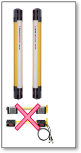
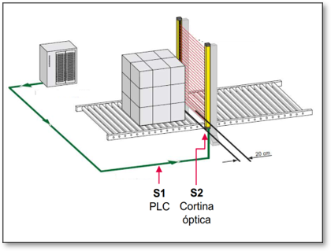

Revolución en el control de accesos: Paso de mercancía seguro sin necesidad de sensores de muting adicionales.


No requiere componentes extra para las señales de gating (S1 y S2). El sistema utiliza la lógica del proceso para autorizar el paso.
Supone no tener que instalar sensórica dedicada de muting. Esto elimina puntos de fallo mecánico y desalineaciones por golpes de palets.
Al eliminar los brazos de muting, se reduce el espacio necesario en el transportador, permitiendo diseños de flujo más compactos y eficientes.